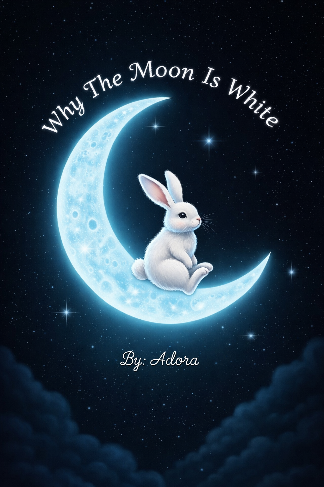

Why the Moon is White
By Adora Lin
Once upon a time, far away from Earth, there lived a baby bunny called Carrot, her eyes twinkling with each second that flew by. She lived on a blue moon, not the beautiful white color that the moon is today. Nobody knew how she ended up there. Every day, Carrot thought, thinking about food as she had not eaten in days. You might think that there is not much food to eat on the moon, and you are right, as right as .
One lonely day, the same as the others, Carrot smelled something. It surprisingly smelled like carrots!
She assumed it was because she was famished but the smell got stronger and stronger by each minute. Carrot couldn't take it anymore. Her nose was definitely sniffing a strong whiff of bright orange, crunchy carrots. She got up and followed the smell. It certainly does smell like carrots, and it smells good! Carrot thought with glee. And right she was; the mouthwatering aroma was that of a carrot, and even more, it was unusually white. When the giant carrot came into sight, Carrot jumped in surprise, almost jumping as high as what she thought was the height of a tree!
"Crunchy carrots!" She yelped, "This is a dream!" Carrot had been starving for days, even starting to nibble on her own whiskers, and standing in front of an enormous carrot that would last for at least five years, she felt on the verge of tears. Breaking off a brittle piece and tasting it, a sweet, flavourful flavor greeted her bland taste buds.
"Who planted this?" She wondered while crunching and munching impulsively, "It couldn't just have sprung up itself." Carrot did not plant it, as she had not known it was even here until now. Could there be another animal on the planet? "Impossible!" Carrot thought, "if there was another animal here, then I would have met them already as I have scoured every single inch of this cheese-like circle." Little did she know, there was another animal on the moon.
Metal clanking nearby, Carrot wondered, Who, oh who is making such a racket? The same animal that planted the carrot? It seemed correct. Carrot looking behind the rock, she discovered a dog, white with brown spots all over him, looking like he was making a metal hat?
"Hello?" Carrot started, "My name is Carrot." Quizzically, the dog looked up.
"Brownie. My name's Brownie." The dog, Carrot noted, had a strong accent. She later discovered that he was actually making a rocket ship. "I want to fly to different planets and explore." He explained, after showing Carrot what he was making. Carrot asked him if he was the one who planted the giant white carrot. Chuckling, he explained that he had found a strange looking seed when he first arrived on the moon, and he planted it. Forgetting about it, he strolled around one day and spotted it.
A few days later, Brownie finished making the rocket ship, and flew back to earth to gather a crew—the Space Explorers. The courageous dog had told Carrot how to find those legendary seeds, telling her to plant some so when their crew came to the moon, they would have plenty of nutrition. She did so, and those massive carrots grew within one day. She'd planted tons and tons, piles and piles that covered the whole moon!
As Carrot had slathered the whole moon with carrots, if you looked at it from Earth, it would seem white instead of blue all because of a once lonely bunny who is not anymore. That is why the moon is white.
The End